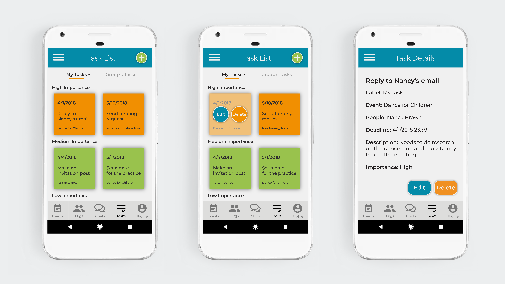
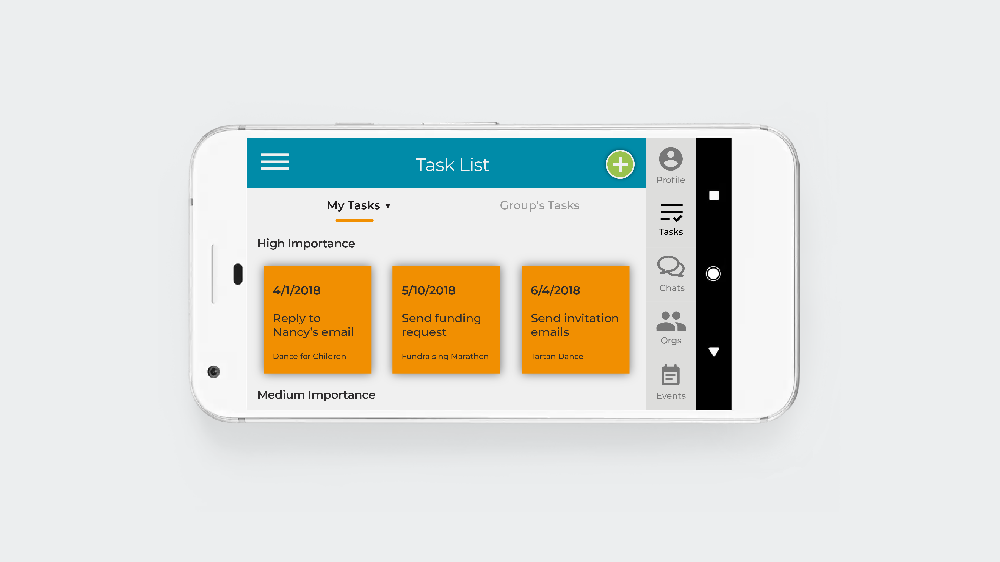

Ensemble Mobile App Design
 Resources: Video Demo; Design process book.
Overview: Ensemble is an app that helps with event planning. Users could view existing events, create new events, view members of an organization, create tasks, chat and etc. Planning made easy.
Note: This is a group project. I designed the screens of task list (regular, long-pressed, horizontal) and task details.
User research: Several leaders of student organizations in CMU were interviewed. Feedback from them was written into a report which guided the design process.
Design process: We first created personas, scenarios, user stories and storyboards. Then we created low-fi wireframe prototypes for user testing. We did the user studies in class and wrote the results into a report. Then we designed the screens and presented in class for some feedback and iterated the design based on the feedback.